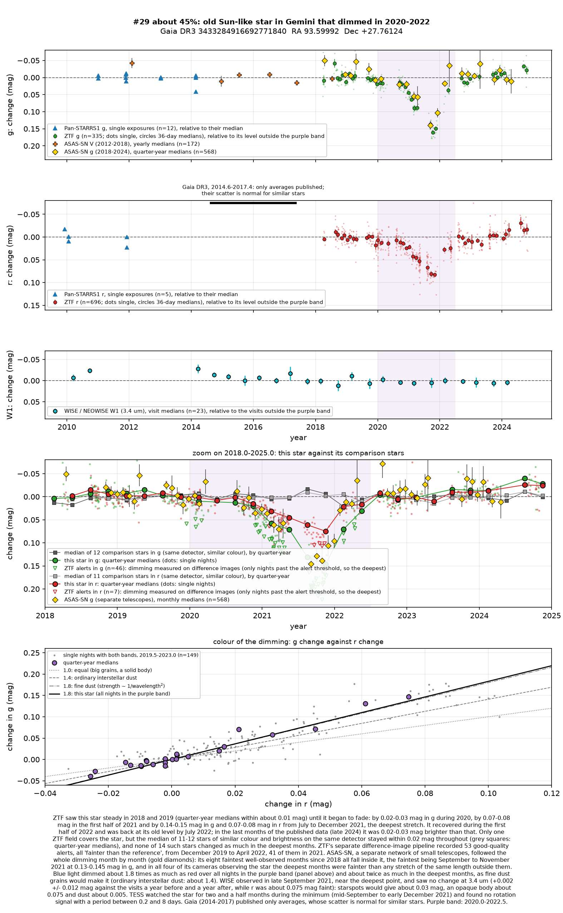
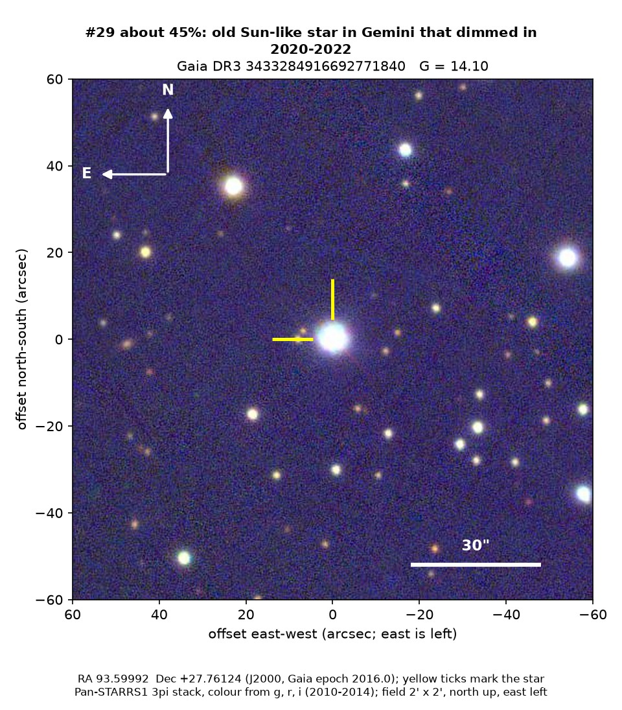
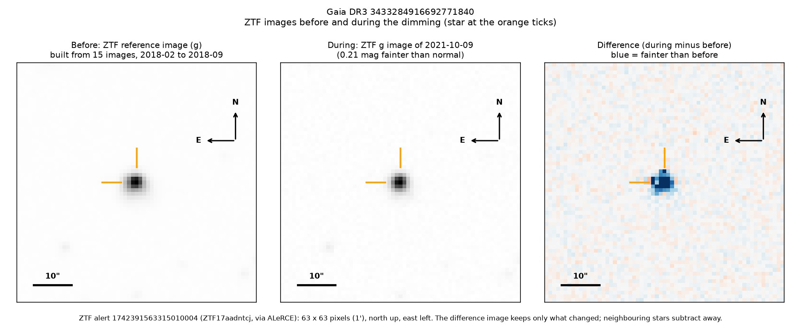
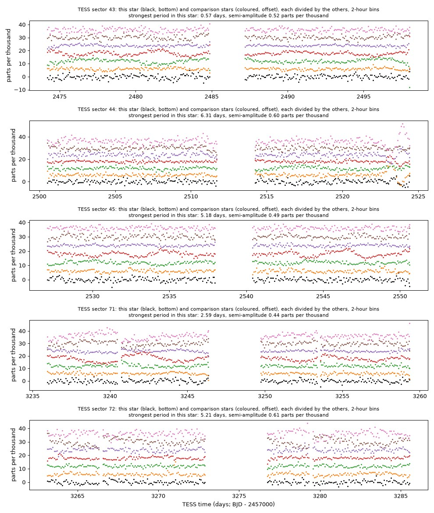

Professor of Mathematics
Paata Ivanisvili
Department of Mathematics, University of California, Irvine

Candidate 29: an old Sun-like star that dimmed for a year
Why this estimate. The dimming is certain: ZTF flagged it 53 times, and the eight faintest months that ASAS-SN, a separate network of small telescopes, has recorded since 2018 all fall inside it. Green light dimmed about twice as much as red, as behind fine dust; NEOWISE saw no change in the infrared, which rules out a solid body and argues against spots, and NASA’s TESS space telescope found no rotation during the dimming. There is no recent spectrum.
How to read the pictures. The finder chart shows a patch of sky two arcminutes across, about a fifteenth of the Moon’s width, with north up and east to the left. The star sits between the two yellow ticks, and the white bar is 30 arcseconds long. On a light curve the vertical axis is magnitude, a brightness scale on which larger numbers mean fainter stars, and it is drawn so that down means fainter. Purple shading marks the dimming. Each survey uses slightly different filters, so each is compared with its own normal level. The ZTF pictures show ZTF’s reference image of the star, an image taken during the dimming, and the difference between the two, in which only what changed remains: blue means fainter and red brighter. On the TESS light curves the star is black and the comparison stars are coloured.

What changed. The star is an old Sun-like star, about 5,700 K and some 10 billion years old, about 670 parsecs away in Gemini. ZTF saw it steady in 2018 and 2019. It began to fade slightly in 2020, dimmed further in the first half of 2021 and from July to December 2021 was 0.14 to 0.15 magnitudes fainter in green light and 0.07 to 0.08 in red light, about 15 per cent less light. It recovered during 2022 and was back to normal by July. ZTF’s alert system flagged it 53 times, every time fainter than the reference.
Why it might matter. Blue light dimmed about 1.8 to 2.0 times as much as red light, more than ordinary interstellar dust (1.4) or starspots (1.1 to 1.3) would cause and as very fine dust would. In late September 2021, near the deepest point, NEOWISE saw no change at 3.4 microns, which rules out a solid body passing in front (it would have dimmed the infrared as much) and argues against spots. TESS watched the star for two and a half months during the minimum and found no rotation. A cloud of fine dust passing in front of an old, quiet star is the likeliest explanation.
No record of the dimming could be found. The star is not in SIMBAD, VSX (the variable-star index), Gaia’s variable-star lists or the other catalogues consulted, nor among the dimming stars of Tzanidakis et al. (2025), and there is no Transient Name Server entry, Gaia alert or paper giving its Gaia number. ZTF’s alert system holds only machine-generated classifications for it.
- Star
- Gaia DR3 3433284916692771840, an old Sun-like star
- Location
- RA 93.59992°, Dec +27.76124° (J2000), in Gemini
- Distance
- about 670 parsecs (2,200 light-years)
- Brightness
- Gaia G = 14.1, far too faint for the eye
- Probability
- This candidate is unconfirmed. The percentage under the title is an estimate of the chance that it is a real, previously unrecorded case of the kind described. The estimate has not been checked by outside experts. See the introduction to all fifty-eight candidates.
- Caveat
- Only one ZTF field covers the star, and only ZTF measured the colour. A faint neighbour 1.85 arcseconds away is lost in its glare. The only spectrum, from the LAMOST survey, was taken in 2013, long before the dimming.


